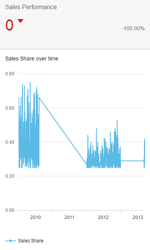

What's New in SAPUI5 1.40
What's New in SAPUI5 1.40
In the following sections, we list the main new features and enhancements to SAPUI5. For a complete, detailed list of all new and enhanced functions, see: Change Log.
The smart templates (list report and object page templates) and overview pages will now be collectively known as SAP Fiori elements. The documentation has been updated to reflect this change, and the term smart templates is no longer used to refer to the list report and object page templates. Note that the tile in SAP Web IDE is currently still labeled Smart Template Application.
List Report and Object Page
-
General Features
-
External navigation: You can now enable intent-based navigation from the create action in the list report and the edit action on the object page to a different app. This feature can be used to delegate these actions to another, for example non-SAP Fiori, app.
-
Belize theme: The list report and object page now support the new Belize theme visual design for SAP Fiori apps.
-
Determining actions: You can now add determining actions to the footer of the list report or object page views. Currently, two types of determining actions are supported:
-
Actions that trigger a back-end call through the OData service
-
Actions that trigger intent-based navigation
-
-
-
List Report View
-
Disable the delete action: You can now enable or disable the delete action on the list report based on certain conditions specified in the back-end system. For example, you may wish to disable deletion for a sales order that has already been paid.
-
Improved error and message handling: Various 5xx / 4xx HTTP error codes related to system unavailability, authorization, and authentication are now handled in the list report. Meaningful and appropriate error messages are displayed, enhancing the usability of the application.
-
Dynamic page: The dynamic page with snapping header and floating tool bar is now available for the list report.
-
-
Object Page View
-
Hide the edit and delete actions: You can now display or hide the edit action and delete action on the object page based on certain conditions that are specified in your back-end system. For example, you may wish to hide the Edit button for a sales order that has already been paid.
-
Micro chart: You can now add micro charts to a facet within the header area in the object page. Currently, the object page template supports bullet and area micro charts.
-
Progress and rating indicator: You can now add progress and rating indicators to a header facet on the object page.
-
Overview Page
Overview pages have been enhanced with the following features:
-
View switch in analytic cards: Multiple individual cards can now be combined and displayed within a single card via the view switch feature. The switch is enabled from a dropdown menu below the header area.
-
Semantic coloring based on threshold values: With this feature, column chart cards can be colored semantically based on threshold values. The threshold values come from data point annotation that is associated with the measure used in the analytic card.
-
You can now create the following cards:
Time Series Chart Card
Combination Chart Card
Scatter Chart Card
You can now create charts that use time as an axis category.
With a combination chart card, you can display more than one measure; the first measure gets displayed in a column format and the subsequent measure is displayed as lines within the chart.
With a scatter chart card, you can visualize the distribution of data points over two measures.



-
Configuration chart navigation mode: You can now configure the chart mode so that by clicking on a data point in the chart area of an analytic card you can see the name and value of the selected dimension.
-
Chart title: Use the annotation term
UI.Chartto display a chart title within the chart area of an analytic card.
Parent topic: Previous Versions